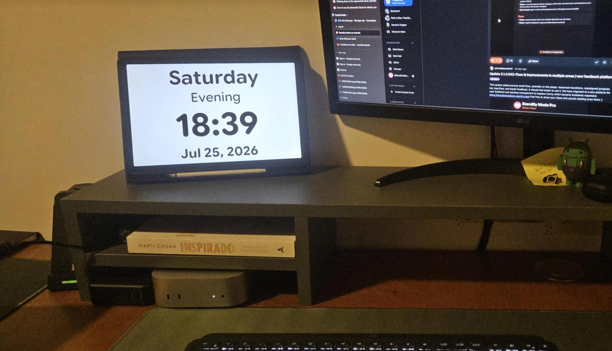
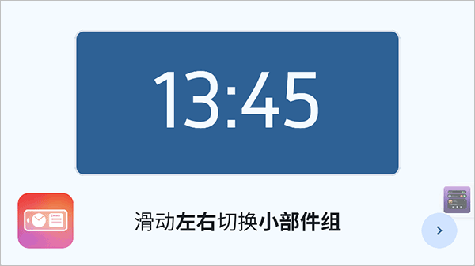

StandBy 充电钟用了半年，踩过这几个坑才敢说省心
把旧手机改成常亮屏看似零门槛，实际触发条件、后台权限、防烧屏处处是雷。这篇把我踩过的四个典型坑和各自的解法整理出来，装完就能少走弯路。
我家抽屉里躺了三年的旧华为，去年翻出来装了 StandBy官网 的安装包往床头一架，本以为改个桌面小工具能有多复杂——结果前前后后折腾了快一周才稳定下来。这软件看着界面清爽、设置简单，实际藏了好几个容易踩的坑，全是那种"以为自己懂了，等翻车才发现根本没摸到门"的类型。
这就把我踩过的四个最典型的坑和对应的解法写出来，装完先对着过一遍，大概率能省你几个小时瞎试。
坑一：横屏插上充电器，屏幕死活不亮
症状：APP 装好了，引导也走完了，按说明把手机横过来插充电器——屏幕黑着，连个反应都没有。反复拔插换角度都没用，一度怀疑手机充电口坏了。
原因：触发条件默认给了三四个叠加项，我当初照着教程没改，结果横放识别有 30 秒延迟，电池电量又在 99% 以上被系统判定为"不需要充电显示"，两个条件同时不满足就卡壳了。另外旧机型如果没把它移出电池优化名单，系统还会趁你锁屏间隙把后台直接杀掉，下次充电触发时进程根本不在。
解法：触发条件只留两个——「正在充电」+「设备横放」，越多越容易互相打架。然后去系统设置里找到 StandBy，把"后台限制"改成"无限制"，"电池优化"里选中它标记为"不优化"。实在嫌麻烦就直接改走系统屏保通道，一劳永逸。

坑二：点 APK 直接弹"解析包出错"
症状：下载完安装包，文件管理器里点一下，系统提示"解析包时出现问题"，连安装界面都进不去。换了另一个渠道重新下载还是一样。
原因：我当时只记得 APK 体积才 20 多 MB，觉得存储空间肯定够，没往这想。实际系统要求安装前至少留出 1GB 富余空间——不是说 APP 会占那么多，是安卓安装时需要解压临时文件、分配运行时缓存，空间卡在几百 MB 时就会静默失败报解析错误。另一个可能是下载中途断过网，安装包文件不完整。
解法：先去存储设置里看可用空间，清掉点照片或旧 APP 腾出 1GB 以上再装。空间够还报错的话，删掉当前安装包，换个网络重新下一遍——安装包直接从下载拿最省心，网盘偶尔会在断点续传时留下残缺文件。
坑三：常亮一周后屏幕留了残影
症状：旧手机改床头钟用了一周，某天晚上关灯后发现屏幕角落有个淡色的日历数字轮廓，熄屏状态下依然看得见——烧屏了。
原因：OLED 屏幕长期显示固定画面会加速像素老化，我当时没开防烧屏，钟面又是那种固定布局的大数字。旧机屏幕素质再好，连续几百小时常亮也顶不住。
解法：进设置把「高级防烧屏」打开，这个功能会在你不看屏幕时自动微调像素位置，肉眼看不出来但能大幅延缓老化。另外再设一个屏幕睡眠定时，比如没人操作 2 小时后自动熄屏，床头钟其实不需要 24 小时亮着。
坑四：找不到编辑模式，误触把待机关了
症状：APP 里看到别人的书桌布局四格仪表盘挺好看，自己想加一个日历，结果在屏上划来划去要么进不了编辑，要么不小心双击把待机直接退出了，只能重新横插充电器。
原因：我跳过了首次启动的引导页——觉得"一个充电钟哪有那么复杂"。结果手势体系完全没建立，该长按的时候在左右滑，该捏合总览的时候在上下翻。StandBy 日常操作全靠几根滑动手势，菜单层级基本没有，没建立起那套肌肉记忆之前到处碰壁。
解法：如果还在首次启动阶段，引导页别跳过，老老实实看完一遍。总结一下核心口诀：左右是换内容组（钟表→天气→照片），上下是换同组里的不同变体，长按拆开改（进入编辑），捏合摊开挑（快速导航总览）。双击是退出待机的快捷键，这个要记牢别误触，更多手势细节和进阶配置可以翻StandBy文档慢慢研究。

防坑清单速查
- 装完先给 StandBy 加权限：后台无限制 + 电池不优化 + 未知来源放行一次
- 触发条件只留"充电 + 横放"两项，越简单越不会莫名其妙不亮
- 常亮场景必开高级防烧屏，再设屏幕睡眠定时
- 安装前检查存储空间富余 ≥1GB，解析包报错先清空间再重装
- 首次启动引导别跳过，手势体系记熟再调布局
说到底，这个软件本身没有什么复杂配置，坑基本都出在安卓系统层面的权限和后台管理上——系统拦一次后台杀一次，你再怎么调 APP 设置都白搭。把系统层的权限先理顺，剩下的就是选个好看的钟面、拉几个感兴趣的小组件，该省心的时候真的省心。StandBy 的安装包和配置资料我同步维护在三个开源仓库里，方便国内不同网络环境下的朋友随时取用：GitHub、Gitee、GitCode。